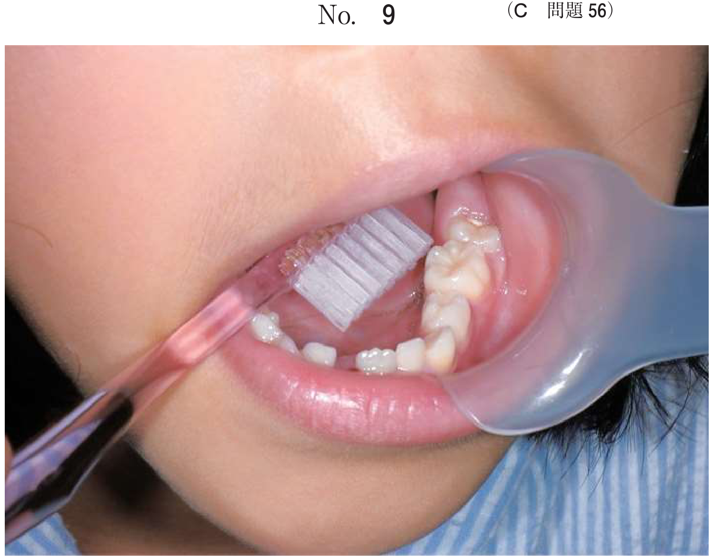
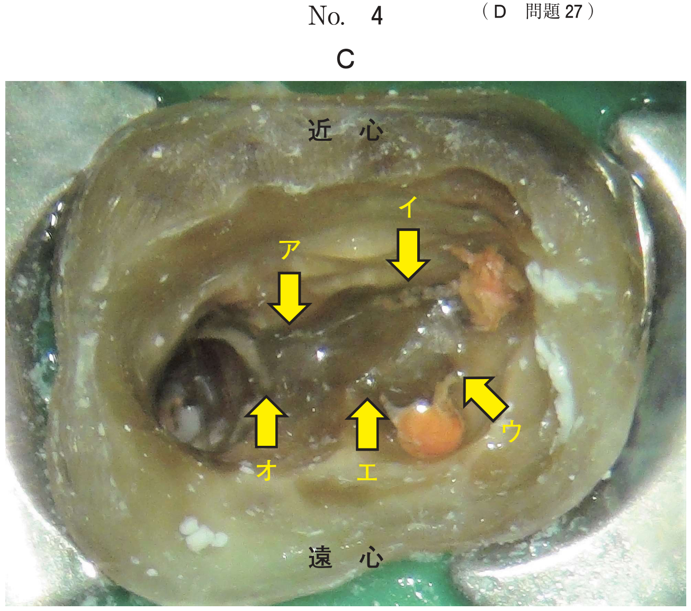
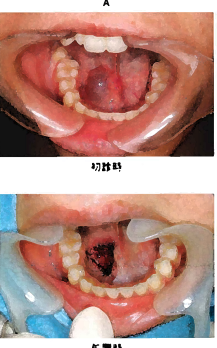
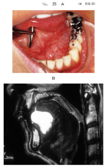
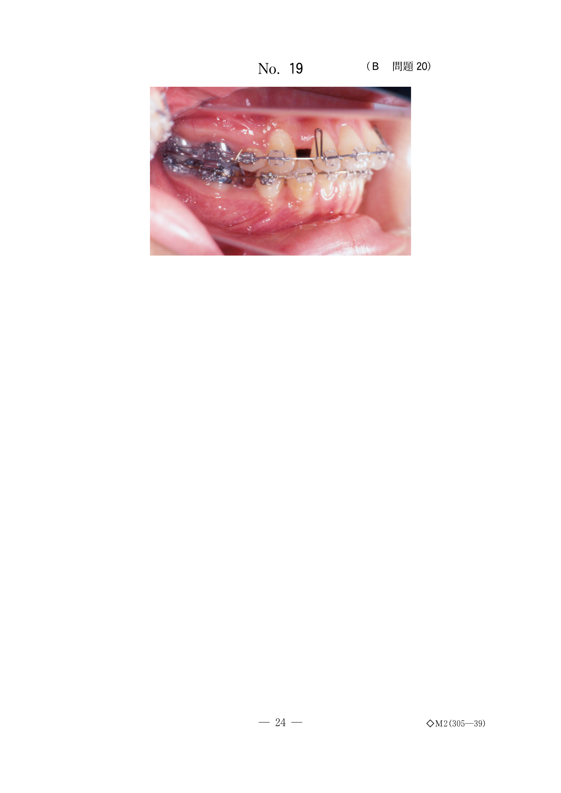
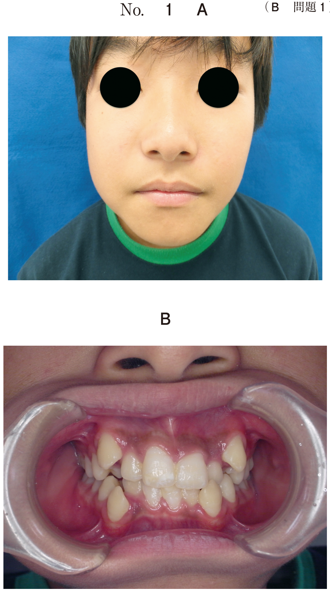
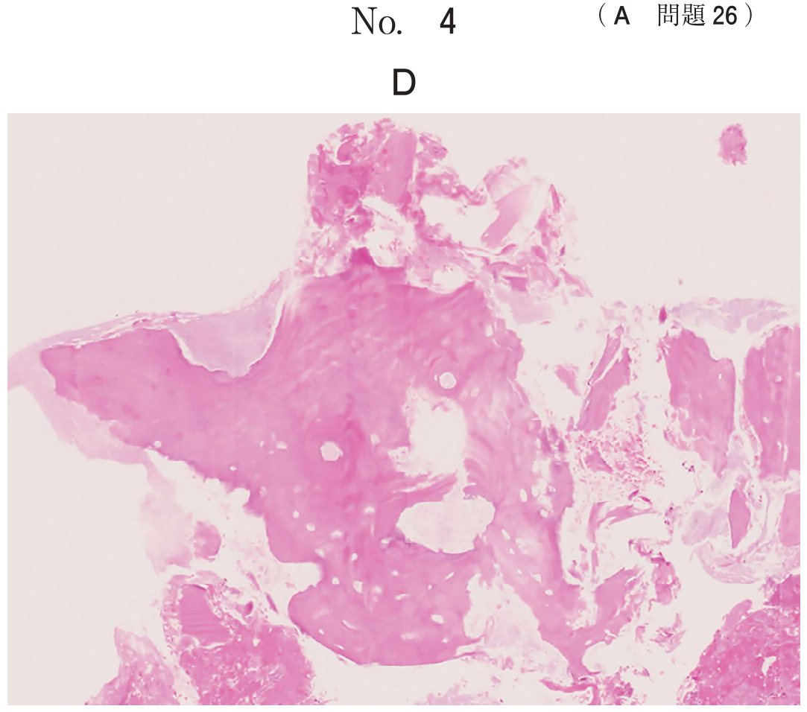
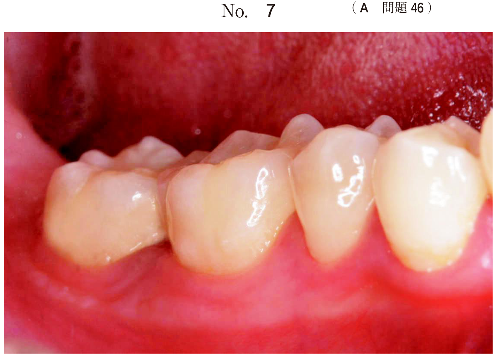
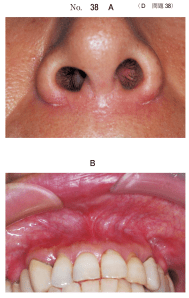
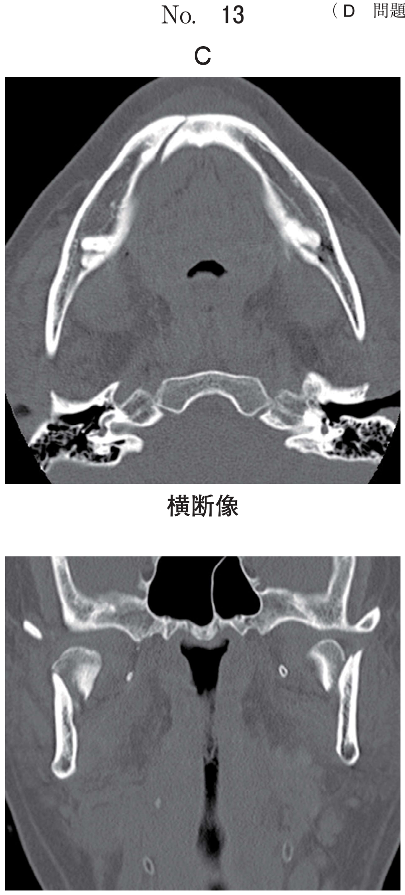

軟組織に発生する嚢胞
軟組織嚢胞の分類
顎骨内ではなく軟組織に発生する嚢胞をまとめる。唾液腺の導管障害による嚢胞（粘液嚢胞・ガマ腫）と、胎生期の遺残組織に由来する発育性嚢胞（類皮嚢胞・甲状舌管嚢胞・鰓嚢胞など）に大別される。
軟組織に発生する嚢胞の一覧
| 嚢胞 | 由来 | 好発部位 |
|---|---|---|
| 粘液嚢胞 | 小唾液腺の導管損傷 | 下唇、舌、頬粘膜 |
| ガマ腫 | 舌下腺の導管障害 | 口腔底 |
| 類皮嚢胞・類表皮嚢胞 | 胎生期の外胚葉遺残 | 口腔底（舌下型・オトガイ下型） |
| 甲状舌管嚢胞 | 甲状舌管の遺残上皮 | 前頸部正中（舌骨付近） |
| 鰓嚢胞 | 鰓裂の遺残組織 | 胸鎖乳突筋前縁 |
| リンパ上皮性嚢胞 | 鰓嚢胞と同じ | 頸部 / 口腔粘膜 |
| 鼻歯槽嚢胞 | 鼻涙管の遺残上皮 | 鼻翼付近の軟組織 |
| 上顎洞粘液貯留嚢胞 | 上顎洞粘膜の腺の閉塞 | 上顎洞底 |
粘液嚢胞
粘液嚢胞（mucosal cyst）は、小唾液腺あるいは大唾液腺の導管が何らかの原因によって損傷され、唾液の流出障害により発生する唾液腺嚢胞全体をさす。口腔領域に発生する軟組織嚢胞の中で最も多い。
分類
- 小唾液腺由来 → 粘液瘤（mucocele）
- 大唾液腺（舌下腺）由来 → ガマ腫（ranula）
病因
大多数は溢出型（extravasation type）で、外傷などで損傷した導管から溢出した唾液に対して肉芽組織が増殖し嚢胞様腔を形成する。一方、貯溜型（retention type）は導管内に唾液が貯溜した結果であり、5.1〜17.6%にすぎない。
好発年齢・好発部位
- 年齢：10〜30歳代に多い。50歳以後は少ない
- 好発部位：下唇が最多。ほかに口腔底、舌、頬粘膜
- 舌尖部下面に生じるものはBlandin-Nuhn嚢胞とよばれる
- 大きさ：5mm前後が多数、1cmを超えるものは少ない
臨床所見
- 無痛性の膨隆で、表在性のものは半透明の青紫色の色調
- 深在性のものは膨隆は軽度で波動もあまり触れない
- 腫脹と消退を繰り返すことがある
病理組織学的所見
- 溢出型：明瞭な嚢胞腔の形成がなく、裏装上皮も明らかでない。肉芽組織や結合組織で囲まれた嚢胞壁
- 貯溜型：上皮の裏装を有する嚢胞腔がみられる
治療
- 摘出術が基本。原因となっている小唾液腺も同時に除去する
- 隣接する小唾液腺も除去 → 再発防止
- 小さなものは被覆粘膜を嚢胞と一緒に全摘出
- 大きなものは嚢胞直上の粘膜を半月状に切開し、嚢胞壁と周囲組織を剥離して摘出
10歳の男児。腫脹と消退とを繰り返す病変部の写真（別冊No. 6）を別に示す。 手術時に再発防止のために行うのはどれか。1つ選べ。

b 粘膜下縫合
c ドレーン挿入
d 小睡液腺摘出
e マットレス縫合
【解説】下唇の腫脹と消退を繰り返す病変は粘液嚢胞を示す。再発防止のためには嚢胞の摘出だけでなく、原因となる小唾液腺を同時に摘出することが重要である。
17歳の女子。舌下面の腫瘤を主訴として来院した。1か月前に気付いたが放置していたところ、徐々に増大してきたという。腫瘤は無痛性で弾性軟である。初診時の口腔内写真（別冊No.13A）と切除時のH-E染色病理組織像（別冊No.13B）を別に示す。 診断名はどれか。1つ選べ。

b 乳頭腫
c 粘液嚢胞
d 粘表皮癌
e 腺樣囊胞癌
【解説】舌下面の無痛性・弾性軟の腫瘤で、10歳代の女子。病理組織像で嚢胞壁に粘液様物質の貯留がみられ、粘液嚢胞（Blandin-Nuhn嚢胞）の診断となる。
65歳の男性。右側頬粘膜部の腫脹を主訴として来院した。1か月前に自覚したが大きさの変化はないという。初診時の口腔内写真（別冊No.11A）、CT（別冊No11B）、MRI（別冊No.11C）、術中の口腔内写真（別冊No.11D）及び摘出物のH-E染色病理組織像（別冊No.11E）を別に示す。 診断名はどれか。1つ選べ。

b 粘液嚢胞
c 類皮嚢胞
d 腺様嚢胞癌
e リンパ管腫
【解説】頬粘膜部の腫脹で、病理組織像から粘液嚢胞と診断される。頬粘膜にも小唾液腺が存在するため粘液嚢胞が発生しうる。脂肪腫やリンパ管腫との鑑別がポイント。
15歳の女子。右側舌下部の腫瘤を主訴として来院した。数か月前から同部の腫瘤を自覚していたが、そのままにしていたところ、徐々に増大したという。初診時と処置時の口腔内写真（別冊No.66A）を別に示す。 別に示すH-E染色病理組織像（別冊No.66B）のうち、本症例の切除組織の所見を示すのはどれか。1つ選べ。

b イ
c ウ
d エ
e オ
【解説】舌下部の粘液嚢胞の病理組織像を選ぶ問題。溢出型粘液嚢胞では、明瞭な上皮裏装がなく、肉芽組織に囲まれた嚢胞腔内に粘液様物質が貯留している像が特徴的である。
ガマ腫
ガマ腫（ranula）は、舌下腺の排出管に関連して口腔底の片側に出現する比較的大きな粘液嚢胞である。外観がガマ（蛙）の喉に似ていることからラテン語のrana（蛙）に由来する。
分類
ガマ腫は発生する解剖学的部位により舌下型と顎下型の2型に分類される。
- 舌下型：口腔底に限局。嚢胞が顎舌骨筋より上方に存在
- 顎下型（plunging ranula / cervical ranula）：嚢胞が顎舌骨筋を超えて顎下部に進展。顎下部の腫脹として現れる
- 鑑別の指標は顎舌骨筋
- 舌下型：顎舌骨筋より上方（口腔底に限局）
- 顎下型：顎舌骨筋を貫通して顎下部へ進展
臨床所見
- 舌下型：口腔底の片側性、無痛性で弾性軟のドーム状膨隆。表在性のものは透明感のある青味がかった色調
- 巨大になると舌を挙上し、嚥下・構音障害をきたすことも
- 顎下型：顎下部に限局性で弾性軟の膨隆。波動は必ずしも触れない。圧痛なし
- 好発：口腔底や舌下部、40歳以下の女性に多い
治療
- 開窓術：再発率60%以上と高い。ガーゼ挿入で約10%に減少
- 嚢胞摘出＋舌下腺摘出：最も確実な治療法。再発率約1%
- plunging ranulaに対してOK-432硬化療法も試みられている
ガマ腫で舌下型と顎下型とを鑑別する指標はどれか。1つ選べ。
b 顎舌骨筋
c 茎突舌骨筋
d オトガイ筋
e 顎二腹筋前腹
【解説】ガマ腫の舌下型と顎下型（plunging ranula）の鑑別指標は顎舌骨筋である。舌下腺は顎舌骨筋の上方に位置し、嚢胞が顎舌骨筋を超えて顎下部に進展したものが顎下型となる。
口底に腫脹と消退を繰り返す病変の口腔内写真（別冊No.30）を別に示す。 原因療法はどれか。1つ選べ。

b 切 開
c 穿刺吸引
d 顎下肱摘出
e 舌下腺摘出
【解説】口腔底の腫脹と消退の繰り返しはガマ腫を示す。開窓や穿刺吸引は対症療法であり再発率が高い。原因療法として最も確実なのは原因となる舌下腺の摘出である。
60歳の男性。口底の腫脹を主訴として来院した。1か月前に気付き、徐々に増大してきたという。腫脹部には波動を触知し、圧痛はない。初診時の口腔内写真（別冊No.25A）、MRI（別冊No.25B）及び手術中と終了時の写真（別冊No.25C）を別に示す。 この手術法の選択理由はどれか。2つ選べ。

b 低侵襲である。
c 病変が多房性である。
d 病変の壁が脆弱である。
e オトガイ下隙に増大している。
【解説】写真から開窓術（造袋術）が行われている。ガマ腫の嚢胞壁は非常に薄く脆弱であるため完全摘出が困難な場合がある。開窓術は低侵襲で、嚢胞壁が脆弱な症例に適している。ただし再発率は高いため、確実な治療には舌下腺摘出が推奨される。
52歳の男性。口底の腫脹を主訴として来院した。疼痛はなく、腫脹は数か月前から増大し、最近就寝中に時々目覚めるという。圧迫すると陥凹し、徐々に元に戻る。初診時の口腔内写真（別冊No.24A）とMRI（別冊No.24B）とを別に示す。 適切な治療法はどれか。1つ選べ。

b 摘出術
c 凍結療法
d 切開排膿術
e 選択的血管塞栓術
【解説】口腔底の無痛性腫脹で圧迫により陥凹し徐々に復元する所見はガマ腫を示す。就寝中に目覚めるほどの大きさから摘出術が適切。掻爬術は嚢胞壁の確実な除去が困難で、切開排膿は炎症性疾患に対する処置である。
類皮嚢胞と類表皮嚢胞
発育期に外胚葉組織が封入されて生じる先天的な嚢胞で、嚢胞壁が皮膚の表面に類似していることから命名された。
類皮嚢胞と類表皮嚢胞の違い
| 項目 | 類皮嚢胞（dermoid cyst） | 類表皮嚢胞（epidermoid cyst） |
|---|---|---|
| 嚢胞壁 | 表皮嚢胞膜 + 皮膚付属器（汗腺・脂腺・毛嚢） | 表皮嚢胞膜のみ |
| 内容物 | 皮脂腺からの分泌物、コレステリン結晶 | 角化物、ケラチン |
| 内容物の性状 | 粥状あるいは豆腐カス状 | 同様 |
好発年齢・好発部位
- 好発年齢：20〜30歳代
- 発生部位：顎舌骨筋により舌下型とオトガイ下型に分けられる
- 舌下型：口腔底の膨隆、舌は後方に挙上し二重舌を呈する
- オトガイ下型：オトガイ下部の膨隆によりdouble-chin appearanceを呈する
治療
- 舌下型：口腔内より垂直粘膜切開にて摘出
- オトガイ下型：オトガイ下部からアプローチして摘出
- 類表皮嚢胞は嚢胞壁が薄く破れやすいので注意。類皮嚢胞は比較的厚く剥離しやすい
22歳の男性。オトガイ下の膨隆を主訴として来院した。1年前から同部の腫脹に気付いたが疼痛がないため放置していたところ、徐々に増大してきたという。嚢胞性疾患の診断のもと摘出術を施行した。初診時の顔貌写真（別冊No.5A）と摘出物のH−E染色病理組織像（別冊No.5B）を別に示す。 診断はどれか。1つ選べ。

b 類皮嚢胞
c 類表皮嚢胞
d 甲状舌管嚢胞
e リンパ上皮性嚢胞
【解説】オトガイ下の膨隆（double-chin appearance）で、病理組織像に皮膚付属器（毛嚢、脂腺、汗腺）を含む嚢胞壁が認められれば類皮嚢胞と診断される。類表皮嚢胞であれば皮膚付属器を含まない。
50歳の男性。口底部の腫脹を主訴として来院した。腫脹は弾性軟である。初診時の造影CT（別冊No.11A）、MRI（別冊No.11B）及び摘出物のH-E染色病理組織像（別冊No.11C）を別に示す。 診断名はどれか。1つ選べ。

b ラヌーラ
c 類皮嚢胞
d 類表皮嚢胞
e 甲状舌管嚢胞
【解説】口底部の弾性軟の腫脹で、病理組織像に皮膚付属器を含む嚢胞壁がみられることから類皮嚢胞と診断される。ラヌーラ（ガマ腫）は粘液様の内容液を有し、甲状舌管嚢胞は前頸部正中に発生する。
甲状舌管嚢胞
甲状舌管嚢胞（thyroglossal duct cyst）は、頸部に発生するもっとも代表的な非歯原性嚢胞で、胎生期の甲状舌管の遺残上皮に由来する。正中頸嚢胞（median cervical cyst）ともよばれる。
発生機序
甲状腺の原基は胎生第4週末に舌盲孔の先端に内胚葉の増殖塊として出現し、頸部の正中線に沿って下降する。通常は退行変性的に消失するが、管の一部が残ると嚢胞を形成する。
臨床所見
- 好発年齢：いずれの年齢層にも発生。約60%は10歳代・20歳代
- 約50%は舌骨体付近に位置
- 前頸部正中の表面平滑な半球状で境界明瞭な腫瘤
- 嚥下時に舌骨の動きに合わせて上下する
- 大きさ：普通は径1〜2 cm
治療
- 舌骨とともに外科的に摘出する（Sistrunk法）
- 嚢胞壁が非常に薄いため、周囲組織との剥離で注意が必要
- 嚢胞摘出後、舌骨体の約2 cm切除し、残遺管を剥離して摘出
- 舌骨を切除しない純粋な摘出術より再発率が少ない
甲状舌管嚢胞の約1%に癌化が起こり、そのうち85%は扁平上皮癌である。
手術時に周囲の関連組織を含めて切除するのはどれか。1つ選べ。
b 類皮嚢胞
c 鼻歯槽嚢胞
d 甲状舌管嚢胞
e リンパ上皮性嚢胞
【解説】甲状舌管嚢胞はSistrunk法により舌骨（周囲の関連組織）を含めて切除する。他の嚢胞は嚢胞そのものを摘出すれば足り、周囲組織を含めて切除する必要はない。
鰓嚢胞・リンパ上皮性嚢胞
鰓嚢胞（branchial cyst）は発育嚢胞の一つで、胎生初期の鰓裂の遺残組織に由来するとされる。側頸嚢胞（lateral cervical cyst）ともよばれる。
分類（Bailey分類）
| 型 | 位置 |
|---|---|
| I型 | 胸鎖乳突筋前縁に沿うもの |
| II型 | 内頸静脈に癒着しているもの（最多） |
| III型 | 内頸静脈と外頸動脈の間から第一頸椎や頭蓋底に及ぶ |
| IV型 | 頸動脈より内側で咽頭側壁に近い |
臨床所見
- 好発年齢：20〜30歳代
- 好発部位：胸鎖乳突筋前縁の深部
- 緩徐に増大する無痛性の膨隆で波動を触れる
- 内容液は灰白色の液体、アミラーゼやコレステリン結晶を含む
- 病理：重層扁平上皮で被覆され、上皮下にリンパ組織を認める
口腔リンパ上皮性嚢胞
口腔粘膜の表面付近に鰓嚢胞と同じ病理組織像を示す嚢胞が発生する。大きさは10mm以下で半球状の小腫瘤。30〜50歳に好発。
右側頸部の腫脹を主訴として来院した患者の初診時の顔貌写真（別冊No.11A）、MRI脂肪抑制造影T1強調冠状断像（別冊No.11B）、T2強調横断像（別冊No.11C）及び生検時のH-E染色病理組織像（別冊No.11D）を別に示す。 診断名はどれか。1つ選べ。

b 神経鞘腫
c 多形腺腫
d 類表皮嚢胞
e リンパ上皮性嚢胞
【解説】頸部の腫脹で、病理組織像に嚢胞壁を裏装する上皮の外側にリンパ組織（リンパ濾胞）が認められればリンパ上皮性嚢胞（鰓嚢胞）と診断される。類表皮嚢胞にはリンパ組織を伴わない。
鼻歯槽嚢胞
鼻歯槽嚢胞（nasoalveolar cyst）は、鼻翼付近とその付近の表面との間の軟組織に発生する嚢胞で、鼻唇嚢胞（nasolabial cyst）、Klestadt嚢胞ともよばれる。鼻涙管の遺残上皮に由来するとされ、顎骨内には発生しない。
臨床所見
- 鼻唇溝の消失、鼻腔底の隆起
- 歯肉唇移行部で弾性軟の腫瘤を触知
- 穿刺により黄色粘稠性の内容液を吸引
治療
摘出術が適切。軟組織内の嚢胞であり、顎骨の処置は不要。
52歳の女性。左側上唇部の違和感を主訴として来院した。2年前から自覚していたという。上顎左側前歯部の歯肉唇移行部で弾性軟の病変を触知するが圧痛はない。初診時の口腔外写真（別冊No.38A）、口腔内写真（別冊No.38B）、MRI（別冊No.38C）及び試験穿刺時の写真（別冊No.38D）を別に示す。 適切な治療法はどれか。1つ選べ。

b 掻爬術
c 摘出術
d 凍結外科
e 上顎骨部分切除術
【解説】上唇部の歯肉唇移行部に弾性軟の病変があり、穿刺で粘稠性の内容液が吸引されることから鼻歯槽嚢胞と診断される。軟組織に発生する嚢胞であり摘出術が適切。顎骨内の嚢胞ではないため上顎骨切除は不要。
上顎洞粘液貯留嚢胞
上顎洞粘液貯留嚢胞は上顎洞底粘膜の小腺の排出管が閉塞し、粘液が貯留して形成される嚢胞様病変である。パノラマエックス線写真などで偶然発見されることが多い。
臨床的特徴
- 多くは無症状で、エックス線写真上の上顎洞底のドーム状不透過像として発見
- 周囲歯に異常がない（生活歯・動揺なし・打診痛なし）
- 自然消退することが多い
- 治療：経過観察（基本的に治療不要）
左側上顎洞内のエックス線不透過像を指摘された患者のエックス線画像（別冊No.23A）と歯科用コーンビームCT（別冊No.23B）を別に示す。上顎左側大臼歯はすべて歯髄電気診で生活反応を示し、動揺や打診痛も認めない。 適切な対応はどれか。1つ選べ。

b 穿刺吸引
c 開 窓
d 摘 出
e 上顎洞根治術
【解説】上顎洞底のドーム状不透過像で、周囲歯はすべて生活歯・動揺なし・打診痛なしから、上顎洞粘液貯留嚢胞が最も考えられる。自然消退することが多く、無症状であれば経過観察が適切な対応である。
鑑別のまとめ
軟組織嚢胞の治療法の整理
| 嚢胞 | 治療 | ポイント |
|---|---|---|
| 粘液嚢胞 | 摘出術 | 原因の小唾液腺も同時除去 |
| ガマ腫 | 嚢胞摘出＋舌下腺摘出 | 開窓術は再発率60%↑ |
| 類皮嚢胞 | 摘出術 | オトガイ下型は外側からアプローチ |
| 甲状舌管嚢胞 | Sistrunk法（舌骨含め摘出） | 周囲組織を含め切除する唯一の嚢胞 |
| 鰓嚢胞 | 摘出術 | residual tractは結紮 |
| 鼻歯槽嚢胞 | 摘出術 | 顎骨の処置は不要 |
| 上顎洞粘液貯留嚢胞 | 経過観察 | 自然消退することが多い |